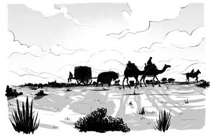
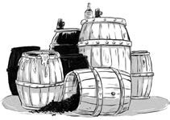
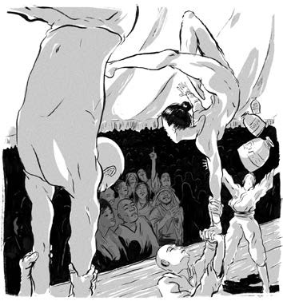

Vào mùa xuân năm 1215, binh lính Mông Cổ từ Trung Hoa trở về trong một khung cảnh tuyệt đẹp. Đoàn người dài vô tận với hàng đàn lạc đà và xe thồ chứa đầy của cải châu báu đổ bóng trên thảo nguyên.

.Nào thảm chân, nào chăn. Nào thảm treo tường, nào nệm. Lụa nhiều đến mức người ta dùng để đóng gói đồ đạc. Cả những sợi lụa nhiều màu đan vào nhau mà trước đây người Mông Cổ chưa từng được thấy.
Thùng chứa đầy rượu, mật ong và trà. Bát sứ, dao đồng và vũ khí bằng sắt. Ngựa chiến trang bị bàn đạp bằng kim loại. Đồ gia dụng tuyệt đẹp cho những căn lều vách nỉ. Trang sức được làm từ đá, ngọc trai và san hô. Dầu thơm và mỹ phẩm. Bàn cờ và những con rối gỗ.

Của cải châu báu đổ dồn tới vùng thảo nguyên xa xôi của Đế quốc Mông Cổ nhiều tới mức người ta phải xây dựng nhiều tòa nhà chỉ để chứa đồ.
Hàng nghìn người theo chân các đoàn lữ hành. Diễn viên nhào lộn, ảo thuật gia, nghệ sĩ tung hứng và nhạc công. Thầy thuốc và người bán thuốc. Họa sĩ, văn nhân, người phiên dịch. Những người này là “báu vật chất xám” của người Mông Cổ, nên dù là người hầu, họ vẫn được đối xử tử tế.
Thành Cát Tư Hãn phân phát chiến lợi phẩm cho mọi người dân Mông Cổ. Người dân của ông chưa bao giờ giàu có như vậy.

Nhưng điều gì cũng có mặt xấu của nó. Sau đó một vài năm, người dân Mông Cổ quá quen với “cuộc sống no đủ”. Họ muốn nhiều hơn nữa, họ muốn những thứ khác biệt và sang trọng hơn. “Báu vật chất xám” của họ cần phải được ăn no mặc ấm. Thợ thủ công cần vật liệu thô như gỗ, vàng và đất sét.
Thành Cát Tư Hãn đã chiến đấu suốt nhiều năm để thống nhất các bộ tộc trên thảo nguyên. Giờ đây ông có nhiều trách nhiệm mới. Ông quyết định mở rộng giao thương với quốc gia Hồi giáo giàu có Hoa Lạt Tử Mô [1]
Nhưng trước tiên, ông phải quyết định ai sẽ lên ngôi sau khi ông qua đời.
Chú thích:
[1] Khwarizm: Hoa Lạt Tử Mô, còn được biết đến với nhiều cách gọi khác như Khwarezm, Khwarazm…